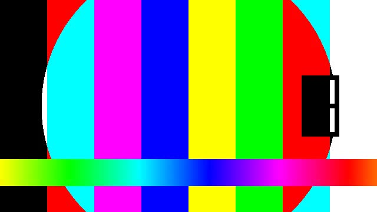

Typografie
Fließtext, der mitdenkt: Spalten, Drop Caps und Zitate ohne Breakpoints
Ein Blick auf NativeCSS' typografische Werkzeuge - mehrspaltiger Fließtext, Drop Caps,
Pull-Quotes und Textumfluss. Alles fließend (clamp()), alles
Container-bewusst, kein einziger fester Breakpoint nötig.

<figure>/<figcaption>
(.ncss-figure) - getrennt vom alt-Attribut, das die
unsichtbare a11y-Beschreibung fürs Bild selbst bleibt (für Screenreader oder falls das
Bild nicht lädt). Beides zusammen sinnvoll: alt beschreibt, figcaption
kommentiert/quellt.
Container Queries haben die Art, wie NativeCSS über "responsiv" denkt, grundlegend
verändert. Statt eine Handvoll fester Viewport-Breiten zu bedienen, reagiert jede
Komponente auf ihre eigene, tatsächlich verfügbare Breite - eine Karte verhält sich
in einer schmalen Sidebar automatisch anders als im breiten Hauptbereich, ganz ohne
eine einzige Zeile JavaScript. Dieser Fließtext hier ist ein weiteres Beispiel:
column-width statt einer festen Spaltenzahl lässt den Browser selbst
entscheiden, wie viele Spalten in die verfügbare Breite passen.
Der Drop Cap oben nutzt dieselbe Logik gleich zweifach: initial-letter
selbst ist bereits nativ (kein Padding-Gefrickel, keine Höhenberechnung von Hand),
und seine Größe wächst zusätzlich per Container Query, sobald der umgebende
.ncss-container breit genug für einen wirklich dramatischen Auftritt
ist - in einer schmalen Spalte bleibt er dagegen bewusst zurückhaltender.
"Breakpointless heißt nicht 'keine Sprünge', sondern 'die Fläche selbst entscheidet, nicht eine geratene Pixelzahl.'"
Auch Textumfluss gehört zum Werkzeugkasten: shape-outside lässt den
Fließtext um die tatsächliche Kreisform herum laufen, nicht nur um die rechteckige
Bounding-Box (.ncss-float-shape-circle für die Form + .ncss-img-
cover fürs Zuschneiden auf ein Quadrat davor). Kombiniert mit Silbentrennung
(.ncss-hyphenate) bleiben auch schmale Spalten neben einem Bild gut
lesbar, statt in unschöne Lücken oder einzelne, sehr lange Wörter am Zeilenende zu
zerfallen. Donaudampfschifffahrtsgesellschaftskapitän ist ein beliebtes Test-Wort
dafür - ohne Silbentrennung sprengt es schmale Spalten zuverlässig, mit
Silbentrennung fügt es sich ein. Unterhalb von 28rem Containerbreite floatet dieses
Bild nicht mehr - dank .ncss-center-narrow steht es dann zentriert
statt linksbündig da. Bewusst OHNE sichtbare <figcaption> hier:
eine zweite Zeile Text unter dem Bild würde die Box höher als das Bild selbst
machen, shape-outside: circle(50%) bezieht sich aber auf die GESAMTE
Box - der Textfluss würde dann um eine Ellipse statt einen Kreis laufen. Die
Bildbeschreibung steckt hier stattdessen im alt-Attribut.
Bild
Textumfluss funktioniert natürlich auch nach rechts (ncss-float-end) und
ganz ohne shape-outside - für ein schlicht eckiges Bild reicht das
float allein, die rechteckige Bounding Box ist ja bereits die Zielform.
Tabellarische Ziffern (1234567890) sorgen
dafür, dass nebeneinander stehende Zahlen - wie die "Fakten"-Kacheln oben - nicht
"wackeln", weil jede Ziffer exakt gleich breit ist, unabhängig vom Wert. Dieses
zweite Bild trägt stattdessen .ncss-full-narrow: unterhalb von 28rem
Containerbreite wächst es auf die volle Breite, statt schmal und linksbündig zu
bleiben.
Am Ende bleibt der Punkt, um den es bei NativeCSS die ganze Zeit geht: möglichst viel davon ist natives CSS, das der Browser ohnehin schon kann - Design-Arbeit besteht dann vor allem darin, die richtigen Bausteine an der richtigen Stelle zusammenzustecken, statt sie neu zu erfinden.
Weitere Textwerkzeuge
Laufweite (.ncss-tracking-*):
--tightSchmale Buchstaben--normalNormale Buchstaben--wideWeite Buchstaben--widerWeitere Buchstaben--widestSehr weite BuchstabenDrop-Cap-Varianten (zusätzlich zu .ncss-drop-cap):
--sm
Kleinere Sink-Höhe für einen zurückhaltenderen Auftritt.
--lg
Größere Sink-Höhe für einen dramatischeren Auftritt.
--light
Dünnere Schriftstärke statt der fetten Standard-Initiale.
--brand
Eingefärbte Initiale in der Markenfarbe.
Textfarben & Ausrichtung:
.ncss-text-brand-2Zweitfarbe für Text.ncss-text-neutralNeutraler Ton für Text.ncss-text-inheritÜbernimmt die Farbe der Umgebung.ncss-text-justify
Blocksatz richtet Text beidseitig bündig aus, am besten kombiniert mit Silbentrennung, damit schmale Zeilen nicht zu große Wortzwischenräume bekommen.
Eyebrow/Kicker (.ncss-eyebrow) und zitierte Aussage mit Quellenangabe (natives <blockquote> aus base.css, <footer>/<cite> jetzt mitgestylt - der "—"-Trenner ist generierter Inhalt, kein hart getipptes Zeichen im Markup):
.ncss-eyebrow
Redaktion
<blockquote> + <cite>
Container Queries sind der Moment, in dem CSS aufgehört hat, nur über den Viewport nachzudenken.
Geboxter Text (.ncss-text-boxed) - jede umgebrochene Zeile bekommt ihre eigene Hintergrund-Box, ganz ohne <span> pro Zeile (box-decoration-break: clone). Braucht einen NICHT-Flex/Grid-Wrapper (siehe Kommentar in typography.css):
Funktioniert auch
über mehrere
Zeilen hinweg!
Farbige Variante
via .ncss-surface--brand
In einer Card kommt es auf die .ncss-card-body selbst an - trägt sie zusätzlich .ncss-stack/-cluster/-grid (verbreitetes Card-Muster für den inneren Abstand) oder ist die Card --horizontal/--horizontal-end, ist sie selbst ein Flex-Container und braucht denselben <div>-Wrapper. Eine reine .ncss-card-body ohne diese Kombination ist dagegen ein normaler Block-Container - kein Wrapper nötig:
Direkt in
.ncss-card-body
Ohne .ncss-stack/-cluster/-grid auf der Card-Body - kein Flex-Container, .ncss-text-boxed funktioniert direkt.
Im <div>
innerhalb .ncss-stack
.ncss-card-body.ncss-stack IST ein Flex-Container - der zusätzliche <div>-Wrapper um die Überschrift fängt die Blockifizierung ab.
Gefloatetes Bild, das zum Bildschirmrand ausbricht (.ncss-float-bleed-start/-end) - Text fließt normal daneben, das Bild reicht bis zum echten Bildschirmrand:
Dieses Bild bricht nach links bis zum Bildschirmrand aus, während der Text ganz
normal daneben weiterläuft - eine Kombination aus Textumfluss
(.ncss-float-start) und Ausbrechen (.ncss-bleed-start),
die sich nicht einfach durch bloßes Kombinieren der beiden bestehenden Klassen
ergibt: ein Float mit width:auto schrumpft auf seinen Inhalt
("shrink-to-fit") statt den verfügbaren Platz zu füllen, wie es der
Bleed-Breiten-Trick eigentlich braucht - deshalb eine eigene Klasse mit fester
Breite. Unterhalb von 28rem Containerbreite (float-wrap-Schwelle)
bleibt es ein normaler, nicht ausbrechender Block.